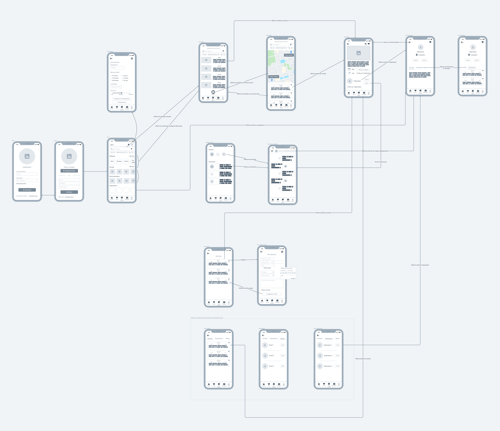
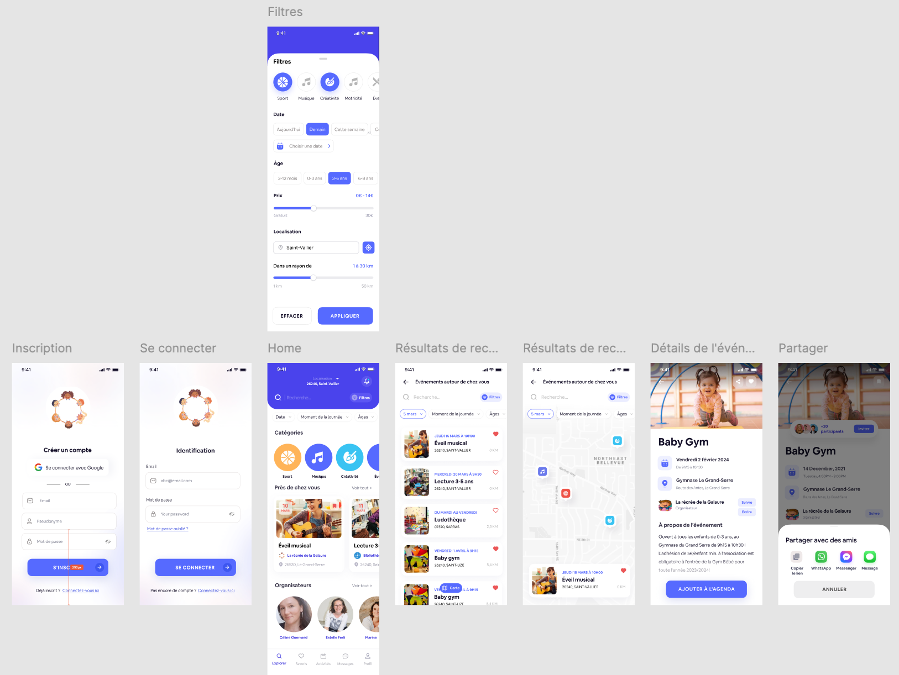
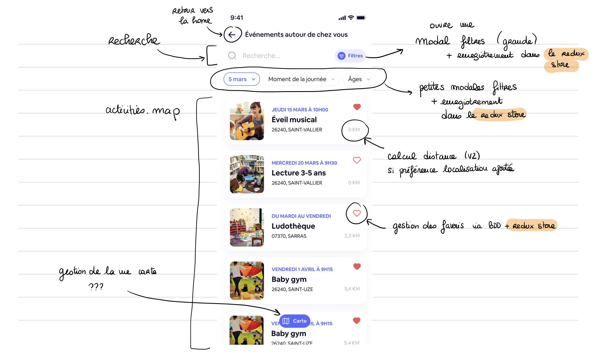

The Little Explorers
A mobile app to list or find family activities near you

Overview
The Little Explorers is a mobile application developed in React Native as part of a final project for the “Web and Mobile Application Developer” bootcamp with La Capsule. This project stems from one of my needs as a mother: finding activities for my child in the surrounding villages.
Core functionalities
- Account creation
- Activity search with filters
- Geolocation
- Saving favorite activities
- Setting user preferences in the profile
- Management of the activities by the associations (creation, modification, deletion)
My role
I had the opportunity to pitch the idea that caught the interest of two of my
classmates.
For
the design, I enjoyed the process of adapting an existing theme to meet
our specific needs.
On the development process, I worked on a significant portion of
the code:
- Redux store initialization
- Authentication
- Filter selection screen
- User preferences management
- Organizer profile screen & backend routes
- Screen displaying listed activities (+edit and delete actions) & backend routes
- Add a photo
- Most of the design, I did my best to match all the screens to the design.
I consolidated my knowledge and I also learned a lot along the way!
And it was a very rewarding experience to see our combined efforts
bring the project to life ✨.
Required skills
To complete this project, we needed the following skills:
- Teamwork on Github
- Create a database with MongoDB
- Model the database with Mongoose
- Create a back-end with Node.JS and Express.JS
- Use an API to manage geolocation data
- Code with React Native
- Use expo Go to simulate the application.
- Use Redux to manage the transit of information between components.
- Use libraries: bcrypt, uid2, uniqid, FontAwesome, Cloudinary, moment, mongoose, node-fetch, uniqid.
- Host images on Cloudinary
- Deploy the application in production using Vercel for the back-end and Expo for the front-end
Source code
Design and prototyping
Storyboard
We started by imagining a storyboard.
As we were working remotely, we sketched it out digitally.
User tests
Here are the main characteristics of potential users of our application:
- Parents of young children or nannies
- Looking for children activities
- Living in a medium-sized town or village
After the creation of our storyboard, we carried out user tests with a panel of 5 people meeting our potential user criteria. Those tests provided valuable feedbacks. Hover the card to visualize how we addressed those pain points:
- + Geolocation request
- + Autocomplete on addresses
- + Use of a pseudonym
- - Deletion of the naming fields
- + Price info on the activity
- + Price filter in the search
- + Created files renamed to My activities
- + Create renamed to List
- - Removal of the Agenda screen
- + Moved My Profile and My Activities screens to the bottom bar menu
- + Moved the List an activity button to My activities
Wireframes
We then created wireframes based on the storyboards and made a few modifications following user testing.
Mock up
Thanks to the Figma community, we were able to use a model that corresponded well to our project and adapt it to our needs. This enabled us to get a nice design without spending too much time on it, and to devote ourselves fully to development.
Project management
Quick mental outline of the project
Before designing a sprint backlog, I took the screens one by one to identify all the tasks to be completed.
Projects backlog
It was then easier to divide the user stories into sub-tasks and prioritize them in
relation to each
other.
We used Trello to divide up the tasks and track their progress.
Development
Difficulties
What gave me the most trouble was managing a conflict between displaying the keyboard when selecting an input field and displaying the “Register” button on the account creation page. I finally got it right on iPhone, but not on Android.
It was a headache trying to align the way the application worked on an Android phone with that of an Apple phone. Particularly for keyboard positioning and pin selection on the map. We had to choose between the two. As I was in charge of the styling, we chose to do a great job on iPhone because I have one.
Also, modifying the style of the material top tabs navigator was not easy. I couldn't figure out how to do it. I read the docs over and over again but what finally helped me was... ChatGPT.
Lessons learned
The keys to our project's success were communication and mutual support. During those two weeks, we'd do an early-morning and an early-afternoon review, and we'd take the time to help each other out when one of us got stuck for too long. I also realized that going through fast crapy code is a great way to understand the importance of clean code.
What I would do differently
Looking back, now that I've learned more stuff about React or MongoDB, I would:
- Use $geonear in MongoDB. It outputs documents in order of nearest to farthest from a specified point.
- Filter activies on the front-end instead of the back-end. This would have simplified our back-end and the user experience would have been more reactive.
- Add personalized hooks for data fetching, geolocation & autocomplete.
- Use a form state object instead of several states.